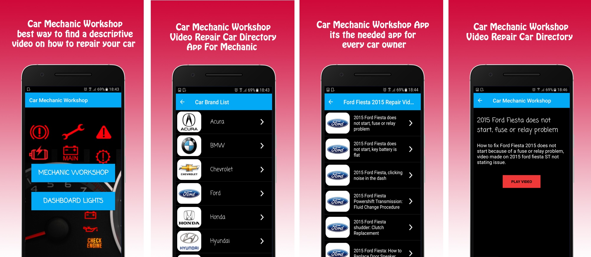
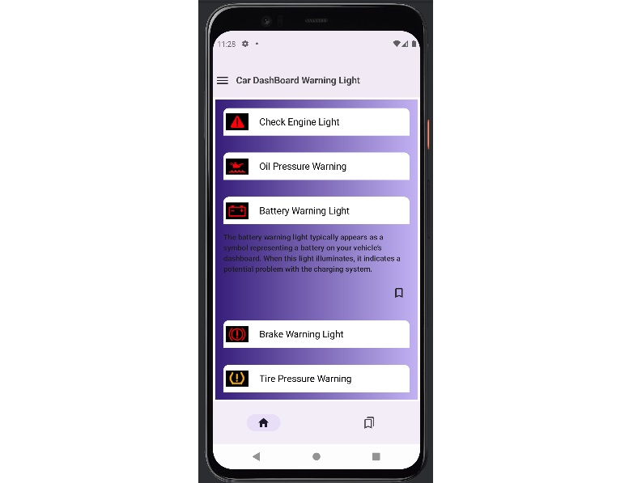
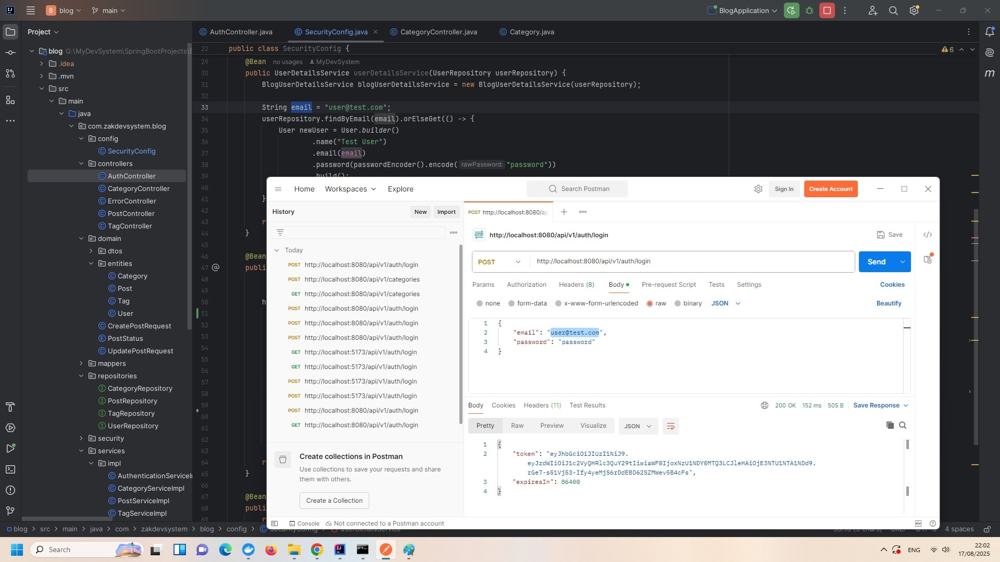
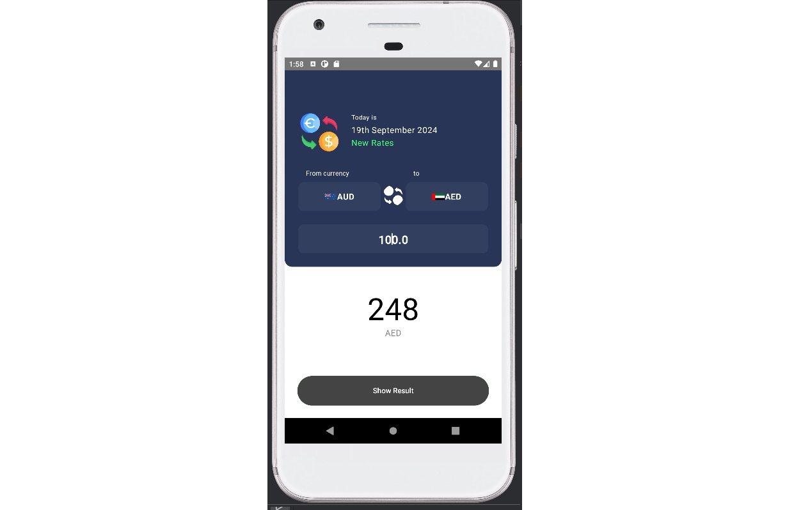
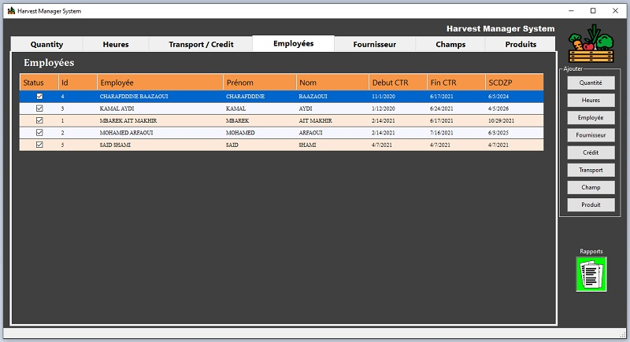
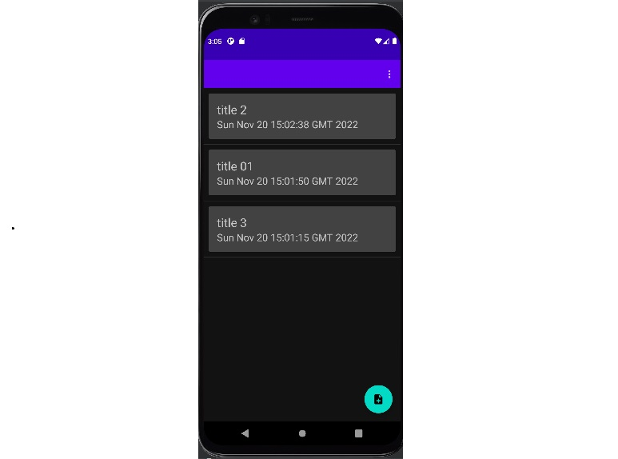
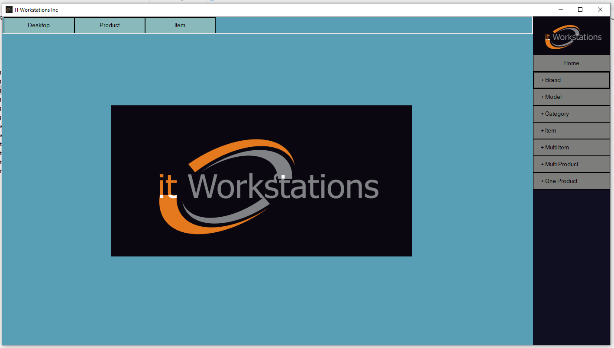
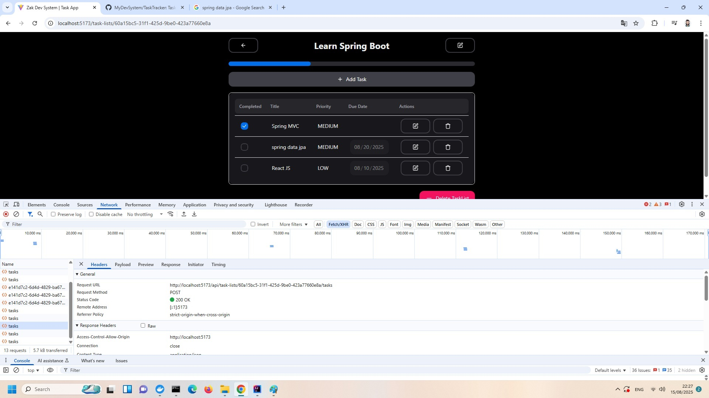
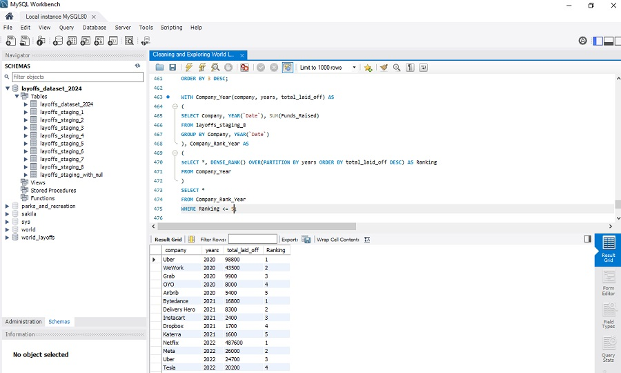
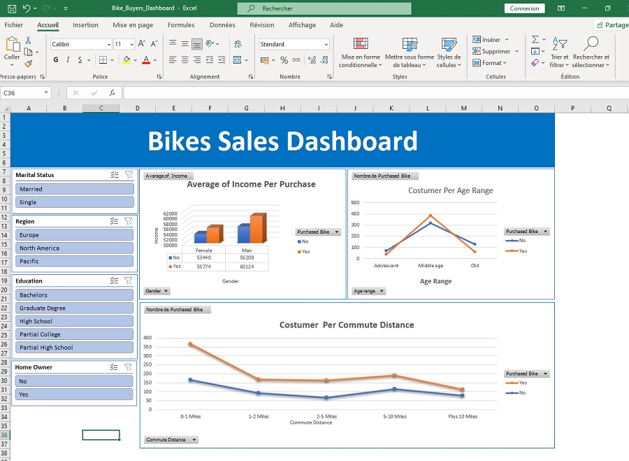

My First App Not the best but I am proud of it
Designed and implemented an Android application using Java. This app help car owners fix their
car problems by providing well-selected and organized car repair YouTube videos, (Fix the
problem of watching unrelated video provided by the search query in YouTube).


Designed and implemented an android application using Kotlin and Jetpack Compose. This app
provides an updated list of dashboard warning lights with descriptions, along with caching to
work offline.

A blog platform backend created using Java, PostgreSQL, Spring Boot and Spring Security.

Implemented a simple Spring Boot project to serve as a foundation for future applications.
Integrated GitHub Actions to set up a CI/CD pipeline, automating the build, test, and deployment
process. Created a Docker image for easy application deployment, ensuring portability and
scalability.

Foreign Currency Exchange is a sample app using the Kotlin Multiplatform | MVVM Clean
Architecture | Koin | Ktor | realm.

Designed and implemented a desktop application using C# to track daily production and monitor
employee status for a harvest company.

Designed and implemented an android application using Kotlin. A beautiful and simple Notes App
for Android users.

Designed and implemented a desktop application using C# to provides the company's employees with
the latest prices and configurations of
computers they want to list advertisements efficiently on eBay and other websites.

Task Tracker BackEnd created using Spring boot and Java. The Task Tracker App is designed to help
users organize their daily tasks, set priorities, and track their progress.
An Infrastructure-as-Code template using Terraform to create dev environment on AWS.

Cleaned and explored the World Layoffs Dataset using MySQL to identify patterns and trends in
global layoffs.

Analyzed the Bike Buyers Dataset using Excel to uncover insights and trends related to customer
behavior and factors influencing bike purchases.